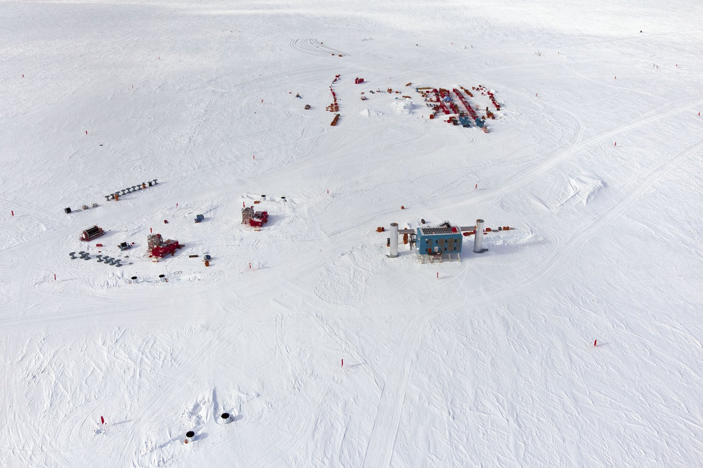
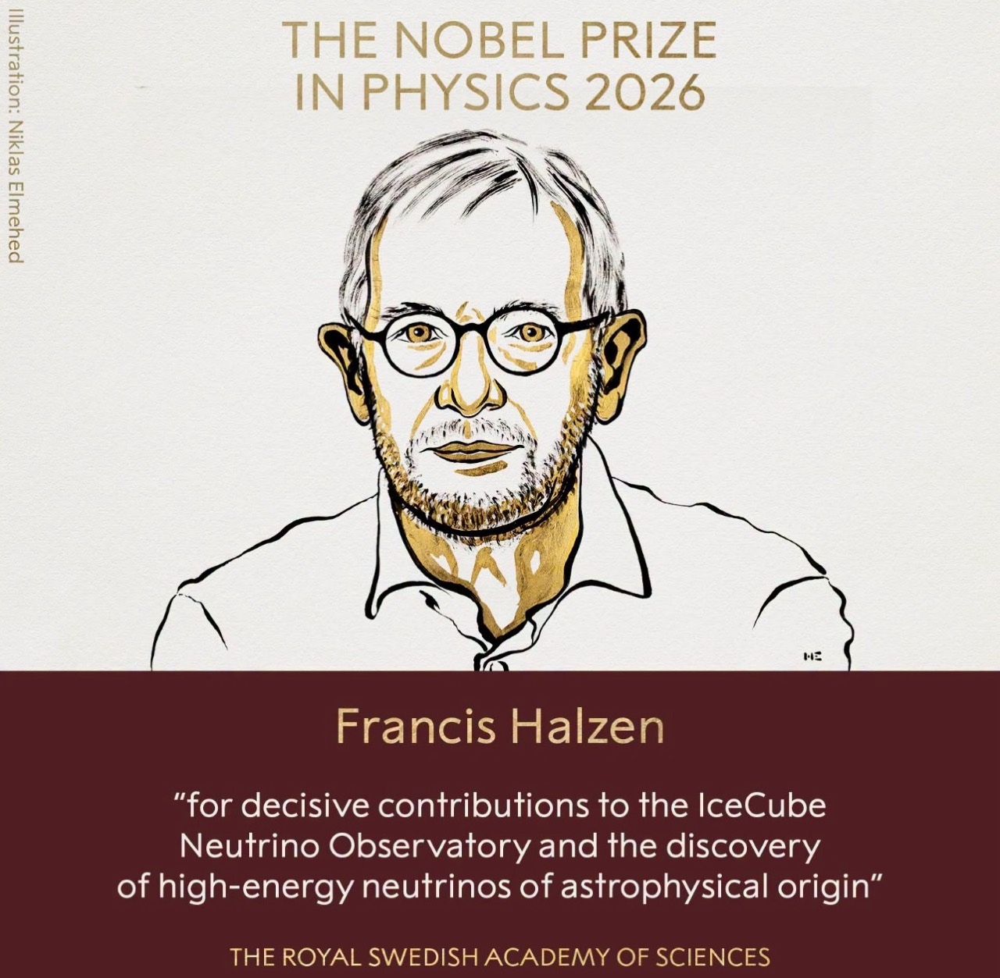
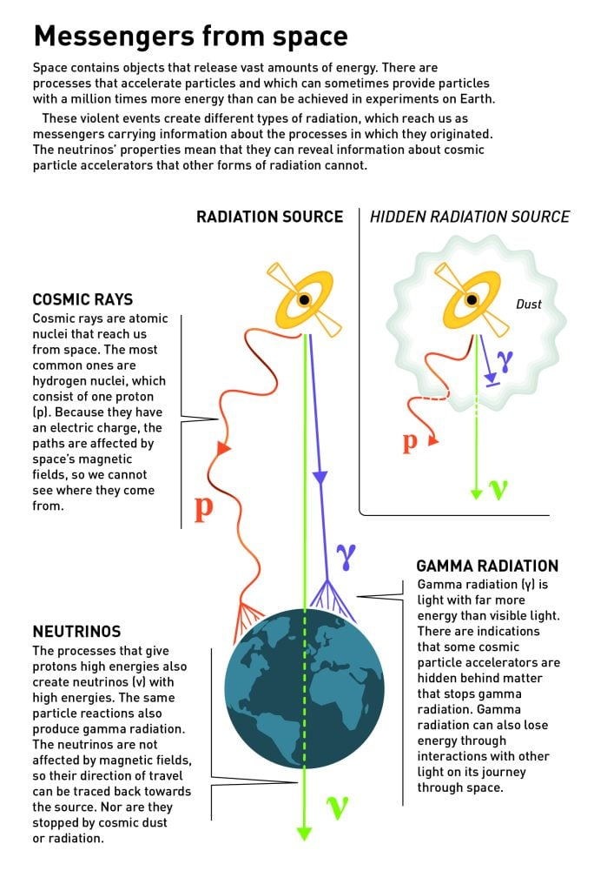
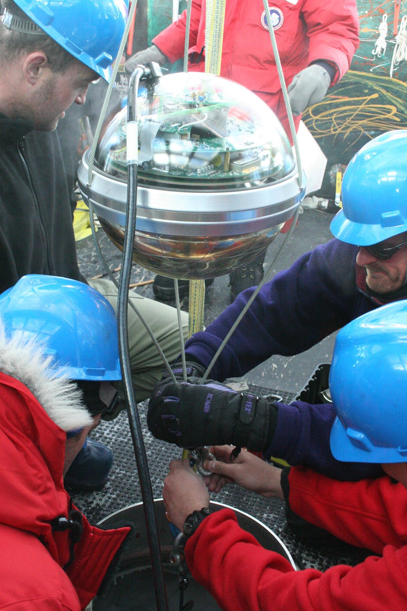
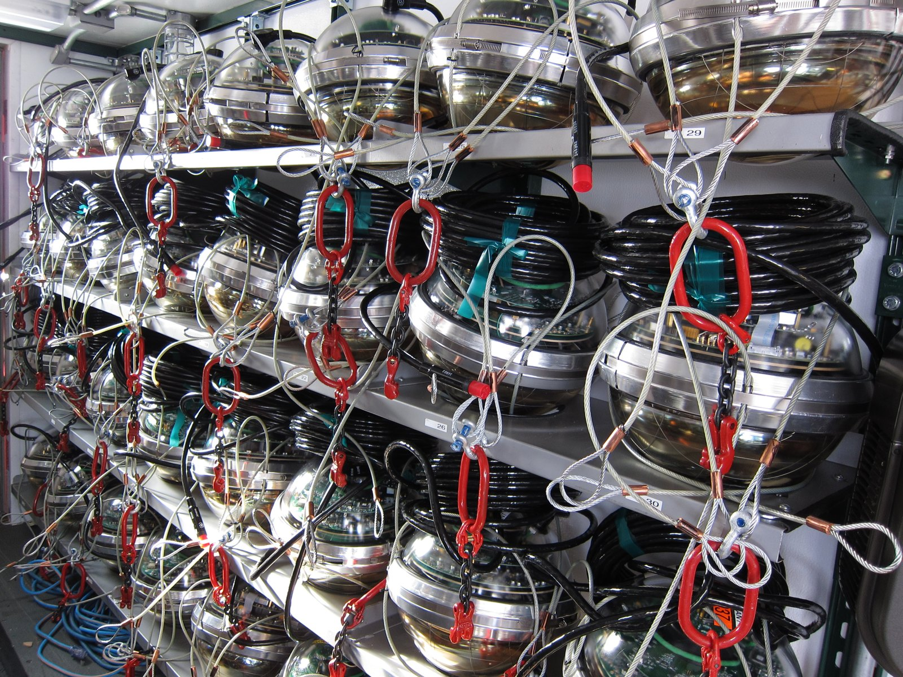
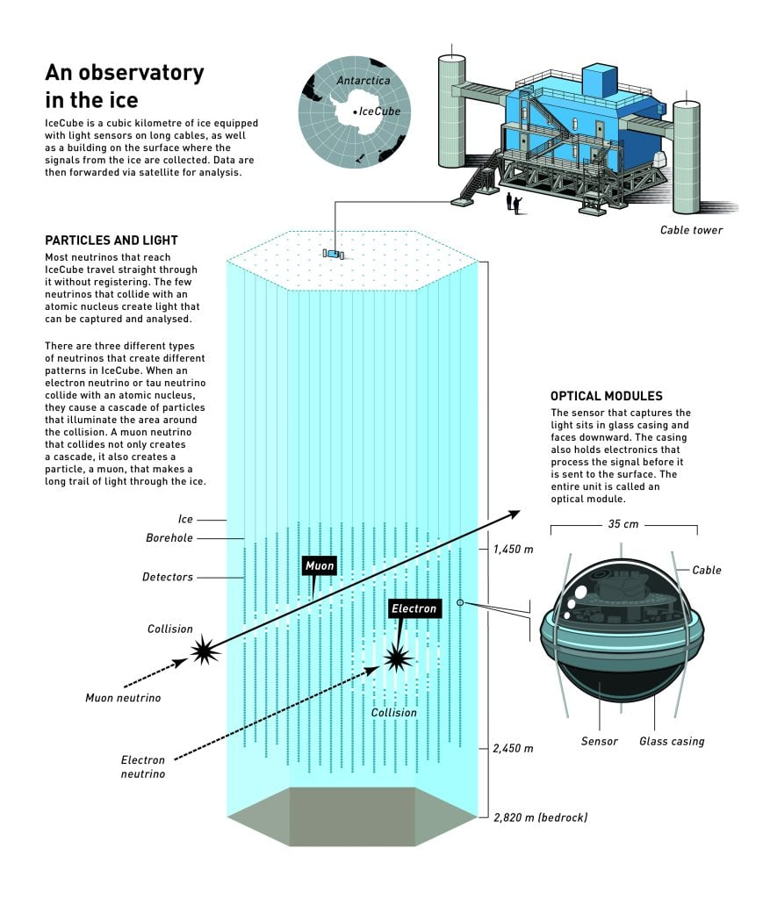
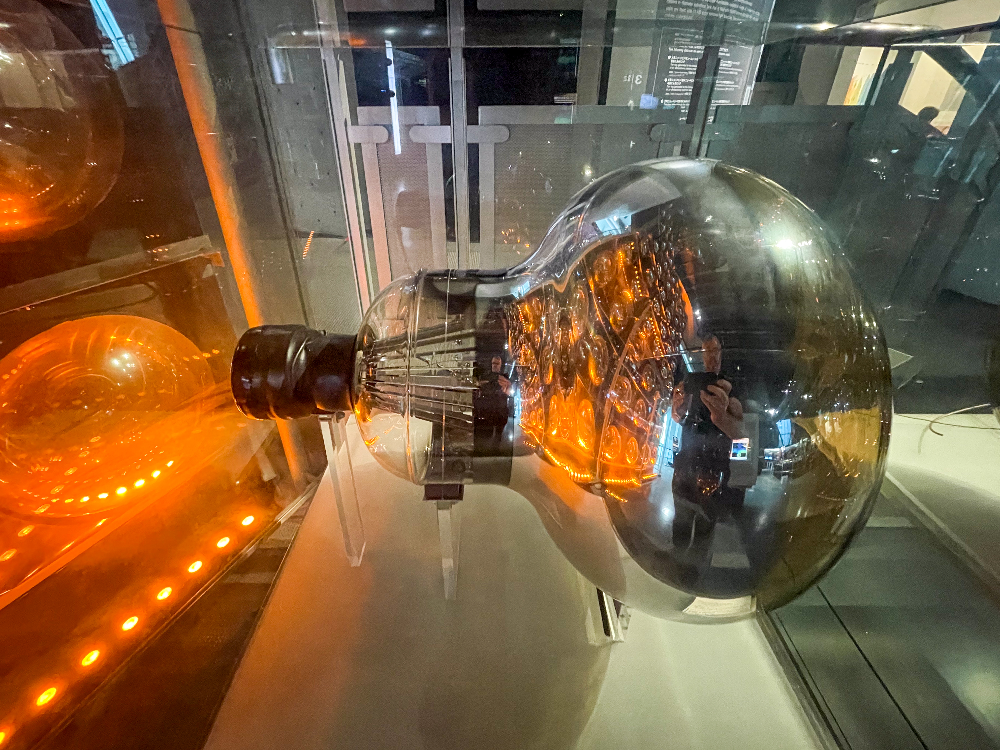

內壁裝滿感光器的地下水槽
約五萬噸水作為偵測介質，感光器排列在內壁，分析光的環形圖樣。主要研究太陽、大氣、加速器微中子與微中子振盪等。
我們習慣用光看星空。但有些宇宙的秘密，藏在光到不了的地方。Francis Halzen 利用微中子來探索宇宙。這種粒子能穿過厚重的物質，只有極少數會與途中遇到的物質發生作用。他把南極深冰變成巨大的偵測器，捕捉這些罕見作用留下的光訊號。


法蘭西斯・哈爾岑｜美國威斯康辛大學麥迪遜分校
正式得獎理由中文譯意：對 IceCube 微中子觀測站，以及發現來自天體的高能微中子，作出決定性貢獻。
獎金 1,200 萬瑞典克朗，獎項由一人獲得。IceCube 的建造、操作與分析，則是國際團隊共同的成果。
肖像：EL PAIS/BERNARDO PÉREZ (www.elpais.com)，由 IceCube 圖庫提供，僅限非商業用途。
微中子通常能穿過地球，卻偶爾會在冰中與物質作用，產生帶電粒子。粒子在冰裡留下微弱的契忍可夫光，埋在深處的感光器記下何時、何地亮起。研究者再從光訊號推算粒子的方向與能量，尋找遙遠宇宙中猛烈活動的線索。
這次得獎的突破，是把一個大膽構想做成能運作的觀測站，並開啟高能微中子天文學。
以上為本屆官方科普資料所述原始 IceCube 陣列規格；後續升級另有新增設備。
微中子（也稱中微子）是一種不帶電、質量極小的基本粒子。它與一般物質作用的機率很低，但不是完全不會作用。
微中子不是組成原子的固定成員。一般原子由電子與原子核組成，原子核包含質子與中子；「中子」與「微中子」是不同粒子。大量微中子正穿過物質，並不表示它們被儲存在物質裡。
太陽核反應、某些放射性衰變、宇宙射線撞擊大氣，以及遙遠天體的高能過程，都能產生微中子。來源遍布不同方向，並非均勻灑落；多數穿過地球後繼續在宇宙中前進。少數發生作用，可能散射或把能量轉移給其他粒子。
「機率很小」不等於「機率為零」。微中子可經由弱作用與冰中的粒子互動。冰體越大、觀測越久，就越有機會累積罕見事件；IceCube 因此需要一立方公里的冰。
單純穿過通常不會留下光。少數微中子作用後產生帶電粒子；當這些粒子的速度超過光在冰中的速度，便發出契忍可夫光。發光的是作用後的帶電粒子，不是微中子本身；也沒有超過真空光速。
有選擇偏差，不能把偵測到的樣本當成所有微中子的完整縮影。偵測效率隨能量、方向與事件類型改變；極高能微中子穿越地球時也更可能受到阻擋。研究者校正儀器與冰的性質，建模大氣背景，並用統計估算不確定性。這能得出有範圍的結論，而不是完整描繪宇宙。
不只方向。光的時間與亮度分布，也能用來估算能量、辨認長軌跡或簇射等事件形態，並記錄抵達時間。不同事件的精確度不同，微中子的類型也不一定能明確辨認。單一事件通常無法直接告訴我們來源天體或距離；需要多次事件的統計，及其他望遠鏡的資料一起判讀。
地球不斷收到宇宙射線，其中許多是高速質子。有些能量遠超地上加速器所能達到的範圍。但質子帶電，經過宇宙磁場時會轉彎；沿它到達地球的方向回頭看，未必找得到出發點。
微中子不帶電，不會像質子那樣被磁場偏轉，與物質作用的機率也很低。因此它有機會從被遮蔽的高能環境一路抵達我們，帶來光學望遠鏡難以取得的資訊。

1988 年，Halzen 與研究同伴提出在南極冰層設置微中子觀測站的構想。深冰天然黑暗、穩定，沒有海洋生物造成的發光干擾；但最早的冰層測試也遇到氣泡散射光線的問題。
研究者後來發現，更深的冰層足夠透明。先行的 AMANDA 計畫驗證方法，接著才把規模擴大到 IceCube：用熱水融出深孔，放入串在纜線上的光學模組，讓冰重新凍住、固定儀器。


燈泡把電轉成光；這些儀器則把微弱的光轉成可記錄的電訊號。每個模組不需要看到整片星空，只要準確記錄微光抵達的時間與亮度。

絕大多數直接穿過。少數在冰中或附近與物質作用。
碰撞產物可能包含緲子等帶電粒子，或形成粒子簇射。
當帶電粒子比「光在冰中的速度」還快，就會發出這種光。它並沒有超過真空光速。
利用各感光器的時間與亮度分布，推算事件特徵。這是資料分析，不是直接拍攝微中子照片。
選擇微中子通過的方向，再比較「直接穿過」與「發生作用」。這個示範把稀有事件放大，讓你看懂原理。
感光器等待光訊號。選一種情況開始。
教學模型限制：碰撞由按鈕指定，不代表真實機率；光圈、感光器數量與幾何已簡化。沒有模擬散射、吸收、背景事件或實際能量重建。
超級神岡與 IceCube 都利用微中子作用後產生的帶電粒子所發出的契忍可夫光，間接偵測微中子。

約五萬噸水作為偵測介質，感光器排列在內壁，分析光的環形圖樣。主要研究太陽、大氣、加速器微中子與微中子振盪等。
感光器分散埋在約一立方公里的冰裡，分析光的時間與亮度。巨大體積有利於捕捉稀少的高能宇宙微中子。
Halzen 把粒子物理與天文學連起來，長期推動以南極冰作為偵測介質，讓想法經過先行實驗、工程建設，最後產生可分析的資料。
2013 年，IceCube 團隊報告來自地球外高能微中子的證據；後續資料進一步鞏固發現。研究者必須排除大氣產生的背景，從事件整體的能量與分布辨認宇宙訊號。
不只接收光，也接收微中子。這些觀測能與電磁波等訊息互相補充，研究宇宙天然粒子加速器與極端環境。
IceCube 建立了天體來源高能微中子的觀測證據。它讓研究者能從光以外的訊息探查宇宙。
找出個別來源更困難，需要更多事件與統計證據。方向相近，不等於已證明某個天體是唯一來源。
本屆官方科普資料以活躍星系 NGC 1068 為潛在來源的例子，並明確指出還需要更多證據。未來擴充的目的，是提高觀測能力；不應把規劃中的規模當成現有設備。
這些發現的意義，是把微中子與宇宙的高能活動連起來；並非已找出每一個事件的確切出生地。IceCube 研究成果與原始論文連結。
2002 年物理學獎已肯定太陽與超新星微中子的先驅觀測，2015 年獎項則表彰微中子振盪的發現。2026 年的重點，是 IceCube 與來自天體的高能微中子。
1988提出利用南極冰偵測微中子的構想。
1990 年代先行計畫 AMANDA 下放感光器，研究冰的透明度與可行性。
2011原始 IceCube 陣列達到完整規模：86 串纜線、5,160 個感光器。
2013團隊報告地球外高能微中子的證據，後續資料鞏固發現。
2026Francis Halzen 獲頒諾貝爾物理學獎。
1944 年出生於比利時 Tienen，1969 年取得 KU Leuven 博士學位。任職美國威斯康辛大學麥迪遜分校；研究橫跨粒子物理、天體物理與宇宙學。
本頁僅供非商業教育與科普。照片為實拍，官方圖解為示意，互動圖由本站製作；本頁未使用 AI 生成圖片。
IceCube 圖庫使用條件｜逐張來源紀錄。分享預覽圖使用 IceCube 空拍照片裁切加字，依同樣非商業條件提供。圖片與頁面不表示官方或作者背書。